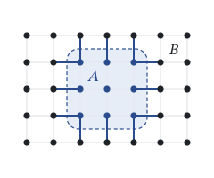

Many-body physics and phases of matter

In systems of many particles, entanglement is hard to pin down: individual particles can rarely be addressed, and often only a few collective quantities can be measured. I develop methods to detect and quantify entanglement from such data, notably generalizations of the spin-squeezing inequalities to particles with many internal levels, and use them to study how entanglement changes across phases of matter and with temperature. For example, in a model of spins that all interact with each other, we found that entanglement can appear at nonzero temperature even in an ordered phase whose ground state is separable. Much of this work is done in close contact with experiments on ultracold atoms.
Key papers
- Estimating the best separable approximation of non-pure spin-squeezed states Quantum 2026
- su(d)-squeezing and many-body entanglement geometry in finite-dimensional systems Quantum 2025
- Entanglement quantification in atomic ensembles Phys. Rev. Lett. 2021
- Entanglement between two spatially separated atomic modes Science 2018